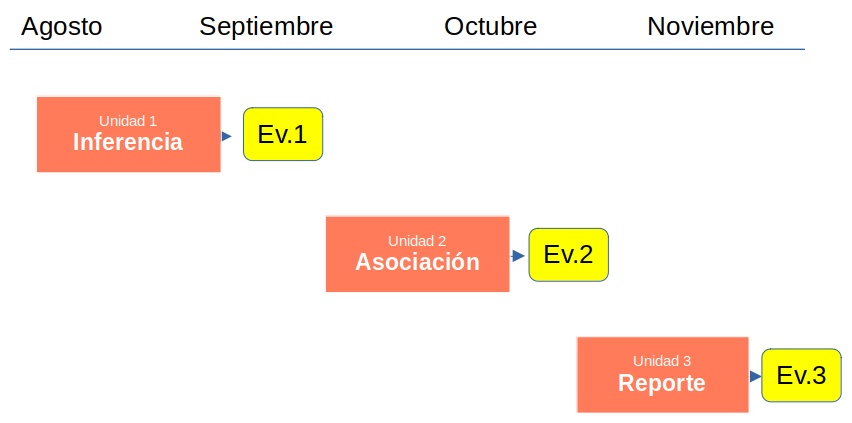

Programa
Profesor
- Prof. Juan Carlos Castillo
- 325 Sociología FACSO, Universidad de Chile
- juancastillov@uchile.cl
- Agendar reunión
Detales del curso
- Lunes y Martes
- 12 Agosto al 29 de Noviembre, 2023
- 10:15-11:45 (Lunes) y 8:30-10:00 (Martes)
- Lunes - Aulario C6, Martes - Aulario C7-C8 & FACSO 345
- Slack
Sobre el sentido general del curso
En este curso vamos a aprender tres cosas principales:
inferencia: los resultados que encontramos en nuestra muestra, ¿se encuentran también en la población de la cual proviene la muestra?
medidas de asociación entre variables: tamaño y significación estadística
reporte y reproducibilidad de los análisis estadísticos: nuestros análisis se reflejan en productos como tablas y gráficos. No basta con entenderlos e interpretarlos, sino también es fundamental una buena comunicación.
Propósito general del curso
Al finalizar el curso los estudiantes conocerán los fundamentos del análisis estadístico inferencial. Se espera que los estudiantes sean capaces de:
- elaborar de manera pertinente hipótesis estadísticas
- aplicar estadísticos de asociación bivariada, a partir de los cuáles puedan desarrollar análisis de problemas sociales
- corroborar el cumplimiento de las condiciones de aplicación de cada estadístico
- utilizar software de análisis estadístico
- contrastar hipótesis de investigación
- elaborar conclusiones integrando fundamentos teóricos con herramientas de análisis estadístico de resultados.
Complementariamente se espera que los estudiantes adquieran herramientas que les permitan comunicar resultados de investigación en contextos sociales, profesionales y académicos.
Competencias
1a. Delimitar, conceptualizar y analizar diversos objetos de investigación social, con especial énfasis en aquellos relacionados con los procesos de transformación del país y Latinoamérica
1b. Manejar diversas estrategias metodológicas de las ciencias sociales
1c. Manejar un conjunto de herramientas para el procesamiento y análisis de información
1d. Transmitir los conocimientos derivados de la práctica investigativa, así como aquellos adquiridos durante el proceso formativo.
Subcompetencias
1.4 Contribuir a generar conocimiento sociológico en el marco de estudios y/o procesos de investigación donde se articulen creativamente las dimensiones teórica, metodológica y práctica.
1.5 Comunicar los saberes disciplinares de manera pertinente a las características de distintos contextos y audiencias, utilizando diversas estrategias y formatos.
Resultados del aprendizaje
Comprende, domina y es capaz de explicar los elementos conceptuales subyacentes a la determinación de la asociación poblacional entre dos variables a partir del análisis de una muestra, y es capaz de traducir hipótesis derivadas de la teoría sociológica en hipótesis estadísticas posibles de contrastar empíricamente con los datos.
Es capaz de seleccionar y usar herramientas estadísticas adecuadas para evaluar la asociación entre dos variables considerando las características de los datos y las condiciones de aplicación de cada técnica.
Logra interpretar desde un punto de vista estadístico y sociológico los resultados derivados de pruebas estadísticas para analizar la relación entre dos variables.
Es capaz de reportar y comunicar adecuada y eficientemente los resultados de los análisis estadísticos
Saberes / Contenidos
Unidad I: Inferencia
Datos, variables y probabilidad
Curva normal y error estándar
Intervalos de confianza
Test de hipótesis
Hipótesis no direccionales y para proporciones
Unidad II: Asociación
Asociación y covarianza
Correlación de Pearson
Correlación con variables ordinales
Matrices y tamaños de efecto en correlación
Asociación con variables categóricas
Unidad III: Reporte
- Responder problemas de investigación de lógica bivariada con datos reales
- Escritura de reportes de investigación
- Visualización de datos
- Presentación de resultados
Metodología
Sesiones de clases lectivas presenciales semanales, donde se presentarán los aspectos centrales de los contenidos correspondientes a la semana.
Prácticos: los temas del curso se acompañan de guías prácticas de aplicación de contenidos. Estas guías están diseñadas para ser desarrolladas de manera autónoma, y también habrá espacio de revisión y consultas en el espacio de clases.
Trabajos: se desarrollarán trabajos de investigación que permitirán a l_s participantes aplicar contenidos y recibir retroalimentación de su desempeño. Los trabajos serán asesorados por ayudantes que se asignarán a cada grupo.
El semestre comienza con clases lectivas, y posteriormente se integran elementos prácticos y de aplicación.
Las clases en general se acompañan de documentos de presentación, que estarán disponibles antes de la sesión en la página de Clases, y están desarrollados con base en Rmarkdown/Xaringan. Estos documentos no son:
- “la clase”
- autoexplicativos (ni aspiran a serlo)
- “el ppt” (ni menos “la ppt”)
Evaluación
El curso tendrá tres instancias de evaluación (actualizado):
- Evaluación 1: Inferencia (30%, teórico)
- Evaluación 2: Asociación (40% = 30% teórico + 10% práctico)
- Evaluación 3: Reporte de aplicación - trabajo grupal (30%= 20% reporte escrito + 10% poster)
La nota ponderada de las evaluaciones equivaldrá al 60% de la nota del curso y el examen final al 40% restante.
Las evaluaciones se distribuyen en el semestre de la siguiente manera:

Las fechas de evaluación no se cambian por respeto a la planificación de los tiempos de tod_s quienes participan en el curso y el cumplimiento apropiado de los objetivos de aprendizaje.
Las evaluaciones de las unidades 1 y 2 son en la sala de clases y se realizan de manera individual.
Hay preguntas sobre conceptos, y principalmente cálculos e interpretación
Entra toda la materia de la unidad, lo visto en clase y los textos obligatorios.
Todo lo que se requiere para realizar los ejercicios de la prueba está en la prueba, no requiere aprenderse las fórmulas de memoria ni tampoco valores específicos (ej: valores críticos de rechazo)
La prueba comenzará puntual, no se puede ingresar ni salir de la sala una vez comenzada la evaluación.
Si alguien tiene alguna emergencia y necesita salir podrá contar con la compañía y apoyo de algun_ de l_s ayudantes en sala.
Inasistencias y atraso en entregas
Los justificativos por ausencia o atraso se realizan en la secretaría de carrera. Lo que la carrera informe como justificado, es lo que se va a considerar en el curso. No enviar justificativos a equipo docente y a ayudantes directamente, no es necesario ni apropiado para l_s estudiantes tener que exponer situaciones personales.
En caso de faltar a alguna de las evaluaciones existirá una única fecha para evaluaciones recuperativas. Si en esa fecha no es posible asistir por motivos justificados, entonces pasará directo a examen.
En el caso de los trabajos, en caso de atraso se descontará 0.5 por día adicional. Si el trabajo no se entrega luego del tercer día de atraso será calificado con nota 1.0
Requisitos de aprobación
Requisitos de eximición a examen:
- contar con un promedio ponderado igual o superior a 5.5
- no tener nota bajo 4.0 en ninguna de las evaluaciones
Requisitos para presentación a examen:
Podrán presentarse al examen de primera oportunidad los estudiantes que hayan obtenido una calificación final igual o superior a 3.5.
El examen de segunda oportunidad será para aquellos estudiantes que presenten una nota igual o inferior a 3.5 o aquellos que en el examen de primera oportunidad no hubiesen logrado una nota igual o superior a 4.0.
Bibliografía Obligatoria
Capítulos correspondientes a cada sesión de los siguientes textos principales:
- Ritchey, F. (2008) Estadística para las ciencias sociales. McGraw-Hill: México.
- Moore (2010) Estadística aplicada básica. Barcelona: Antoni Bosch.
- Pardo, Ruiz y San Martín (2015). Análisis de Datos en Ciencias Sociales y de la Salud I. Editorial Síntesis: Madrid.
Bibliografía Complementaria
Wickham, H., & Grolemund, G. (2016). R for data science: import, tidy, transform, visualize, and model data (First edition). Sebastopol: O’Reilly.
Field, A., Milles, J., & Field, Z. (2012). Discovering statistics using R. London: Sage.
Salkind, N. J. (Ed.). (2010). Encyclopedia of research design (Vol. 1). Sage.
Levin, J. & Levin, W. (1997). Fundamentos de Estadística en la Investigación Social (Vol.2). Oxford University Press.
Sobre participación y comunicación
Se espera asistencia y participación activa, tanto a las sesiones lectivas como a las prácticas. Se pasará lista en todas las sesiones. No habrá penalización por inasistencia, pero si llevaremos registro principalmente con objetivos de monitoreo y retroalimentación del curso.
Informar flexibilidades académicas al principio del semestre (en caso que la jefatura de carrera no lo haga de manera centralizada). Las flexibilidades academicas no aplican para cambios de fechas de evaluaciones grupales.
Se espera y enfatiza la participación activa por distintos canales disponibles. Estos son:
- contacto por correo con equipo docente del curso (profesor y apoyos docentes)
- espacio para resolver dudas individualmente al final de la clase
- reuniones con equipo docente, para lo cual se deben inscribir previamente en la página inicial de este sitio
- foros, disponibles tanto para las clases como para los prácticos.
- mentorías con ayudantes asignados
También se enfatiza un trato respetuoso y horizontal. Quienes están tomando este curso serán referidos como participantes y/o estudiantes, evitar el uso de “l_s cabr_s” o “l_s chiquill_s”, que si bien puede intentar transmitir cercanía finalmente expresan minimización de la contraparte. Quien no se sienta tratad_ apropiadamente o vea que otr_s no lo están siendo, se solicita reportar para solucionar la situación.
No se responderán mensajes fuera del horario laboral (incluyendo por supuesto fines de semana).
Programación de sesiones
Visitar la página de Planificación.